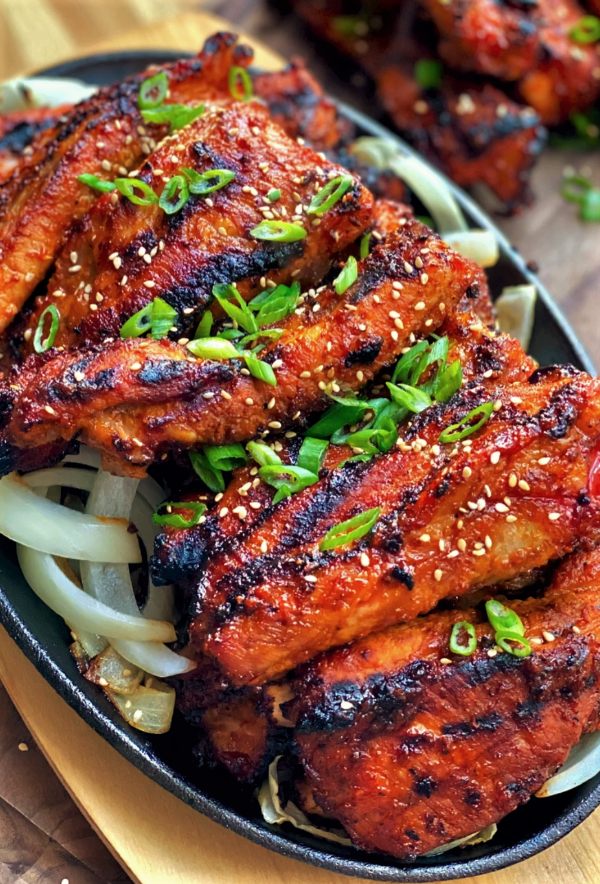

Dwaeji Galbi

Description
Dwaeji galbi is a popular Korean bbq dish, marinated in a sweet & spicy sauce, then grilled or slow cooked.
This dish is actually VERY easy to make and is definitely a crowd pleaser.
Ingredients
- Pork Spare Ribs
- Green Onion
- Sesame Seeds
- Onion
- Asian Pear
- Garlic
- Ginger
- Mirin
- Soy Sauce
- Sesame Oil
- Soybean Paste
- Gochujang
- Gochugaru
- MSG
Steps
- Remove the membrane from the ribs, then cut them into single pieces and soak in cold water for 1 hour
- Blend all the marinade ingredients together until smooth
- Drain the water from the ribs and pat them dry with paper towels. Set some of the marinade aside for basting later,
then massage the rest into the ribs
- Lightly oil your grill and make sure the heat is high enough to get a nice char on the ribs
- When it starts to char, flip them over and baste with the reserved marinade. Continue basting and flipping occasionally for about 25 minutes
- Top with green onions and sesame seeds.